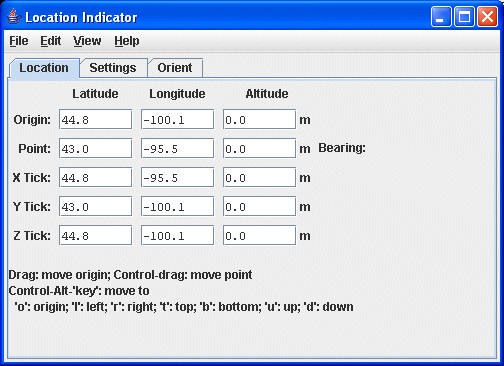
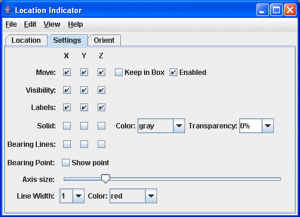
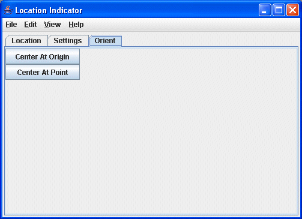

Overview
The location indicator controls display a configurable axis in the main 3D display
and (optionally) a bearing point. The user interface is composed of three tabs: Location, Settings, and Orient.
Location Tab
The first tab displays and allows you to modify the position of the origin and the
bearing point.

Image 1: Location Indicator Location Tab
Properties
- Origin - Enter in a latitude, longitude, and altitude to set the location of the
origin point in the 3D display window.
- Point - Enter in a latitude, longitude, and altitude to set the location of the
bearing point in the 3D display window.
- Bearing - Lists the bearing point degree.
- X Tick - Enter in a latitude, longitude, and altitude to set the location of the
X tick mark in the 3D display window.
- Y Tick - Enter in a latitude, longitude, and altitude to set the location of the
Y tick mark in the 3D display window.
- Z Tick - Enter in a latitude, longitude, and altitude to set the location of the
Z tick mark in the 3D display window.
Settings Tab
The second tab allows for the configuration of display settings.

Image 2: Location Indicator Settings Tab
Properties
- Move - Use this checkbox to constrain along which axis points are moved.
- Keep in Box - When checked, constrains the movement to be within the main 3D bounding box.
- Enabled - When checked, the option to drag points will be enabled.
- Visibility - Turn on/off the visibility of the X, Y, and Z axes in the 3D display window.
- Labels - Turn on/off the visibility of the X, Y, and Z labels in the 3D display window.
- Solid - When checked, a solid plane along any of the axes will be displayed.
You can also change the color and the transparency of the plane with
the pull down menus.
- Bearing Lines - Show or hide the bearing lines. These are dashed lines from the respective
axis to the bearing point.
- Bearing Point - Turn on/off the display of the bearing point with the Show point checkbox.
- Axis size - Use the slide control to expand/contract the length of the origin axis.
- Line Width - Use the pull down menu to set the line width of the origin axis.
- Color - Use the pull down menu to set the color of the origin axis.
Orient Tab
The third tab allows for the orienting the display based on the location. To change the origin, click and drag in the main display. To show and/or change
the bearing point, do a control-drag in the main display. The x/y/z locations
of the bearing point are shown on the origin axis as tick marks and, optionally,
as longitude/latitude/altitude readouts.

Image 3: Location Indicator Orient Tab
Properties
- Center At Origin - Click to center the display at the origin point.
- Center At Point - Click to center the display at the point of the location indicator.
- Set origin to address - Enter in an address to center the origin on using the View->Set
origin to address menu. See the valid formats in the Go to Address window.
- Set point to address - Enter in an address to center the point of the location indicator on using
the View->Set point to address menu. See the valid formats in the Go to Address window.